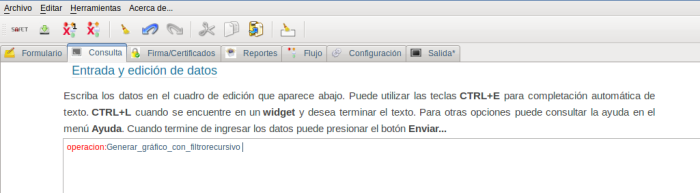
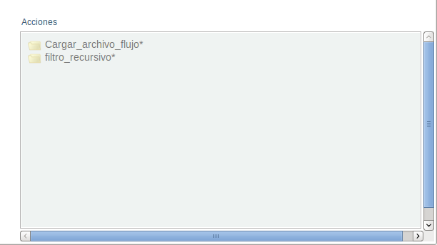
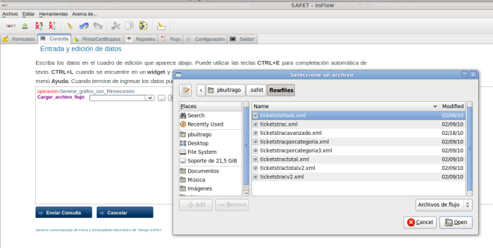
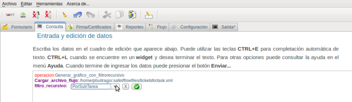
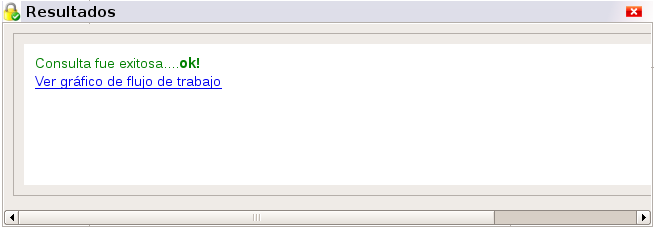
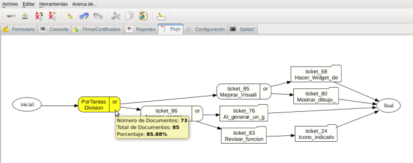

Generar_gráfico_con_filtrorecursivo del menú inteligente, y en el área de edición debe aparecer la linea de texto operacion:Generar_gráfico_filtrorecursivo, (ver figura S3.2.6-1), aparte debe aparecer el menú inteligente los campos relacionadas con esta operación (ver figura S3.2.6-2)

Generar_gráfico_con_filtrorecursivo
Generar_gráfico_con_filtrorecursivo
/[home/pbuitrago]/.safet/flowfiles y agregado en el archivo safet.conf en la sección [Widgets]), para la misma se debe hacer click sobre el campo cargar_archivo_flujo* del men6ua
inteligente y debe aparecer en el cuadro de edición la linea de texto Cargar_archivo_flujo: junto con un botón de selección donde se debe marcar el documento de flujo de trabajo a consultar. Si el documento de flujo de trabajo no esta agregado en el archivo safet.conf lo puedes seleccionar haciendo click al botón filtros_recursivos. (ver figura S3.2.6-3)
filtro_recursivo
filtros_recursivo definidos se va a utilizar. Estos filtro_recursivo están definidos en el documento de flujo de trabajo, Para seleccionar el filtro_recursivo se hace click sobre el campo Filtro_recursivo*: del menú inteligente y debe aparecer la linea de texto filtro_recursivo: junto que un botón de selección donde debe indicar el filtro_recursivo a consultar. (Ver figura S3.2.6-4) Si dentro del documento de flujo de trabajo no esta definido ningún filtro_recursivo (etiqueta 
filtro_recursivo
filtro_recursivo. A cada estado que conforma el flujo de trabajo tiene un mismo color pero con diferente intensidad de acuerdo a la cantidad de ticket que se encuentra en cada uno de los estados según el filtro_recursivo, el estado que tiene el calor mas intenso contiene mas ticket, al colocar el puntero sobre cualquiera de los estado, aparece un cuadro de dialogo que indica: la cantidad de ticket en ese estado, la cantidad de
ticket en todo el flujo de trabajo y el porcentajes de ticket en ese estado (ver figura S3.2.6-6) el color del flujo de trabajo, se puede cambiar configurado en el archivo safet.conf o en la sección de configuración del sistema.

filtro_recursivo